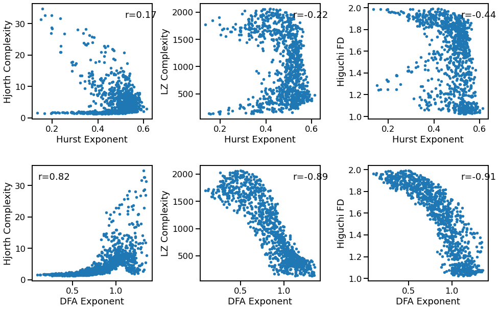
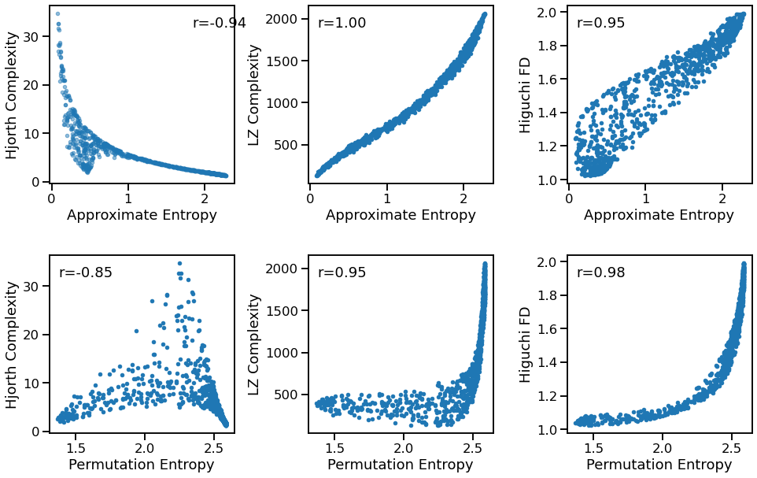
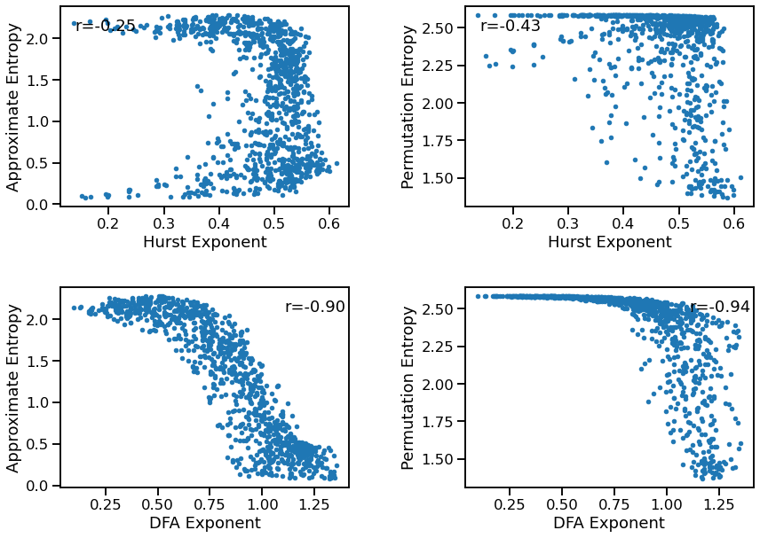

Compare Other Methods¶
Here we compare non-exponent estimations to each other.
import numpy as np
import matplotlib.pyplot as plt
from neurodsp.sim import sim_combined
from neurodsp.utils import set_random_seed
from antropy import higuchi_fd
from antropy import perm_entropy, app_entropy
from bootstrap import bootstrap_corr
# Import custom code
import sys; from pathlib import Path
sys.path.append(str(Path('..').resolve()))
from apm.run import run_comparisons
from apm.plts import plot_dots
from apm.utils import format_corr, sampler
from apm.methods import app_entropy, perm_entropy
from apm.methods import hurst, dfa, hjorth_complexity, lempelziv
from apm.methods.settings import HURST_PARAMS, DFA_PARAMS, AP_ENT_PARAMS, PE_ENT_PARAMS
from apm.sim.settings import FS, SIM_PARAMS_COMB
Collect Methods¶
# Define ranges to sample parameters from
samplers = {'update_comb_exp' : sampler(np.arange(-2.5, 0, 0.1)),
'update_pow' : sampler(np.arange(0, 1, 0.1)),
'update_freq' : sampler(np.arange(5, 35, 1))}
# Define measures to apply
measures = {hurst : HURST_PARAMS,
dfa : DFA_PARAMS,
hjorth_complexity : {},
lempelziv : {},
higuchi_fd : {},
app_entropy : AP_ENT_PARAMS,
perm_entropy : PE_ENT_PARAMS}
Run Simulations¶
N_SIMS = 1000
# Run simulations, comparing specparam exponent to entropy
outputs = run_comparisons(sim_combined, SIM_PARAMS_COMB, measures, samplers, n_sims=N_SIMS)
Fluctuations to Complexity¶
# Plot comparisons
_, axes = plt.subplots(2, 3, figsize=[16, 10])
plot_dots(outputs['hurst'], outputs['hjorth_complexity'], tposition='tr',
xlabel='Hurst Exponent', ylabel='Hjorth Complexity', ax=axes[0, 0])
plot_dots(outputs['hurst'], outputs['lempelziv'], tposition='tr',
xlabel='Hurst Exponent', ylabel='LZ Complexity', ax=axes[0, 1])
plot_dots(outputs['hurst'], outputs['higuchi_fd'],
tposition='tr',
xlabel='Hurst Exponent', ylabel='Higuchi FD', ax=axes[0, 2])
plot_dots(outputs['dfa'], outputs['hjorth_complexity'], tposition='tl',
xlabel='DFA Exponent', ylabel='Hjorth Complexity', ax=axes[1, 0])
plot_dots(outputs['dfa'], outputs['lempelziv'], tposition='tr',
xlabel='DFA Exponent', ylabel='LZ Complexity', ax=axes[1, 1])
plot_dots(outputs['dfa'], outputs['higuchi_fd'], tposition='tr',
xlabel='DFA Exponent', ylabel='Higuchi FD', ax=axes[1, 2])
plt.subplots_adjust(wspace=0.4, hspace=0.4)

# Compute bootstrapped correlations
corrs_hst_hjo = bootstrap_corr(outputs['hurst'], outputs['hjorth_complexity'])
corrs_hst_lzc = bootstrap_corr(outputs['hurst'], outputs['lempelziv'])
corrs_hst_hfd = bootstrap_corr(outputs['hurst'], outputs['higuchi_fd'])
corrs_dfa_hjo = bootstrap_corr(outputs['dfa'], outputs['hjorth_complexity'])
corrs_dfa_lzc = bootstrap_corr(outputs['dfa'], outputs['lempelziv'])
corrs_dfa_hfd = bootstrap_corr(outputs['dfa'], outputs['higuchi_fd'])
print('Correlations:')
print(' HST & HJO: ', format_corr(*corrs_hst_hjo))
print(' HST & LZC: ', format_corr(*corrs_hst_lzc))
print(' HST & HFD: ', format_corr(*corrs_hst_hfd))
print(' DFA & HJO: ', format_corr(*corrs_dfa_hjo))
print(' DFA & LZC: ', format_corr(*corrs_dfa_lzc))
print(' DFA & HFD: ', format_corr(*corrs_dfa_hfd))
Correlations:
HST & HJO: r=+0.173 CI[+0.101, +0.242], p=0.000
HST & LZC: r=-0.222 CI[-0.288, -0.154], p=0.000
HST & HFD: r=-0.441 CI[-0.494, -0.382], p=0.000
DFA & HJO: r=+0.820 CI[+0.795, +0.843], p=0.000
DFA & LZC: r=-0.890 CI[-0.899, -0.879], p=0.000
DFA & HFD: r=-0.907 CI[-0.914, -0.897], p=0.000
Complexity to Entropy¶
# Plot comparisons
_, axes = plt.subplots(2, 3, figsize=[16, 10])
plot_dots(outputs['app_entropy'], outputs['hjorth_complexity'], tposition='tr',
xlabel='Approximate Entropy', ylabel='Hjorth Complexity', ax=axes[0, 0])
plot_dots(outputs['app_entropy'], outputs['lempelziv'], tposition='tl',
xlabel='Approximate Entropy', ylabel='LZ Complexity', ax=axes[0, 1])
plot_dots(outputs['app_entropy'], outputs['higuchi_fd'], tposition='tl',
xlabel='Approximate Entropy', ylabel='Higuchi FD', ax=axes[0, 2])
plot_dots(outputs['perm_entropy'], outputs['hjorth_complexity'], tposition='tl',
xlabel='Permutation Entropy', ylabel='Hjorth Complexity', ax=axes[1, 0])
plot_dots(outputs['perm_entropy'], outputs['lempelziv'], tposition='tl',
xlabel='Permutation Entropy', ylabel='LZ Complexity', ax=axes[1, 1])
plot_dots(outputs['perm_entropy'], outputs['higuchi_fd'], tposition='tl',
xlabel='Permutation Entropy', ylabel='Higuchi FD', ax=axes[1, 2])
plt.subplots_adjust(wspace=0.4, hspace=0.4)

# Compute bootstrapped correlations
corrs_aen_hjo = bootstrap_corr(outputs['app_entropy'], outputs['hjorth_complexity'])
corrs_aen_lzc = bootstrap_corr(outputs['app_entropy'], outputs['lempelziv'])
corrs_aen_hfd = bootstrap_corr(outputs['app_entropy'], outputs['higuchi_fd'])
corrs_pen_hjo = bootstrap_corr(outputs['perm_entropy'], outputs['hjorth_complexity'])
corrs_pen_lzc = bootstrap_corr(outputs['perm_entropy'], outputs['lempelziv'])
corrs_pen_hfd = bootstrap_corr(outputs['perm_entropy'], outputs['higuchi_fd'])
print('Correlations:')
print(' AEN & HJO: ', format_corr(*corrs_aen_hjo))
print(' AEN & LZC: ', format_corr(*corrs_aen_lzc))
print(' AEN & HFD: ', format_corr(*corrs_aen_hfd))
print(' PEN & HJO: ', format_corr(*corrs_pen_hjo))
print(' PEN & LZC: ', format_corr(*corrs_pen_lzc))
print(' PEN & HFD: ', format_corr(*corrs_pen_hfd))
Correlations:
AEN & HJO: r=-0.944 CI[-0.958, -0.928], p=0.000
AEN & LZC: r=+0.998 CI[+0.997, +0.998], p=0.000
AEN & HFD: r=+0.945 CI[+0.936, +0.952], p=0.000
PEN & HJO: r=-0.852 CI[-0.880, -0.821], p=0.000
PEN & LZC: r=+0.947 CI[+0.938, +0.954], p=0.000
PEN & HFD: r=+0.983 CI[+0.979, +0.985], p=0.000
Entropy to Fluctuations¶
# Plot comparisons
_, axes = plt.subplots(2, 2, figsize=[14, 10])
plot_dots(outputs['hurst'], outputs['app_entropy'], tposition='tl',
xlabel='Hurst Exponent', ylabel='Approximate Entropy', ax=axes[0, 0])
plot_dots(outputs['hurst'], outputs['perm_entropy'], tposition='tl',
xlabel='Hurst Exponent', ylabel='Permutation Entropy', ax=axes[0, 1])
plot_dots(outputs['dfa'], outputs['app_entropy'], tposition='tr',
xlabel='DFA Exponent', ylabel='Approximate Entropy', ax=axes[1, 0])
plot_dots(outputs['dfa'], outputs['perm_entropy'], tposition='tr',
xlabel='DFA Exponent', ylabel='Permutation Entropy', ax=axes[1, 1])
plt.subplots_adjust(wspace=0.4, hspace=0.4)

# Compute bootstrapped correlations
corrs_hst_aen = bootstrap_corr(outputs['hurst'], outputs['app_entropy'])
corrs_hst_pen = bootstrap_corr(outputs['hurst'], outputs['perm_entropy'])
corrs_dfa_aen = bootstrap_corr(outputs['dfa'], outputs['app_entropy'])
corrs_dfa_pen = bootstrap_corr(outputs['dfa'], outputs['perm_entropy'])
print('Correlations:')
print(' HST & AEN: ', format_corr(*corrs_hst_aen))
print(' HST & PEN: ', format_corr(*corrs_hst_pen))
print(' DFA & AEN: ', format_corr(*corrs_dfa_aen))
print(' DFA & PEN: ', format_corr(*corrs_dfa_pen))
Correlations:
HST & AEN: r=-0.255 CI[-0.319, -0.188], p=0.000
HST & PEN: r=-0.431 CI[-0.486, -0.371], p=0.000
DFA & AEN: r=-0.905 CI[-0.913, -0.893], p=0.000
DFA & PEN: r=-0.941 CI[-0.947, -0.932], p=0.000
Conclusions¶
Words, words, words.